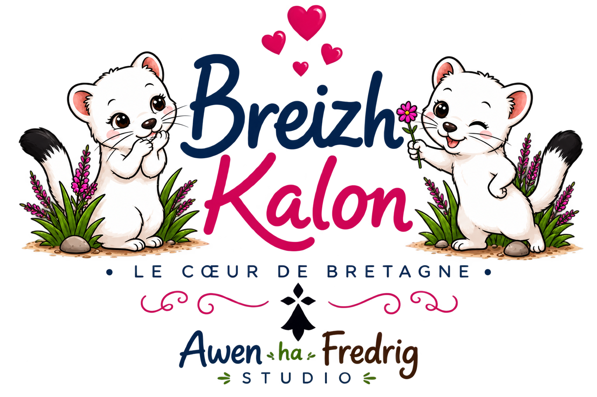

❤️
Les Kalons
Un profil vous plaît ? Envoyez un Kalon. Lorsque l’intérêt est réciproque, la connexion peut commencer.
Breizh Kalon est une application de rencontres pensée pour les adultes qui vivent en Bretagne historique ou souhaitent s’y installer à l’année. Une autre façon de se découvrir : moins de défilement à la chaîne, davantage d’affinités, d’échanges et de confiance.

Des rencontres ancrées dans un territoire commun : les cinq départements de la Bretagne historique.
Breizh Kalon met l’accent sur les affinités, la réciprocité et une découverte progressive des profils.
Un profil vous plaît ? Envoyez un Kalon. Lorsque l’intérêt est réciproque, la connexion peut commencer.
La photo n’est pas livrée immédiatement comme un simple catalogue de profils. Elle se dévoile progressivement au fil des échanges.
Une fois la connexion créée, la messagerie permet d’apprendre à se connaître et de faire évoluer la découverte du profil.
Breizh Kalon couvre les Côtes-d’Armor, le Finistère, l’Ille-et-Vilaine, la Loire-Atlantique et le Morbihan.
Les profils donnent des repères concrets pour mieux savoir avec qui vous pourriez avoir envie d’échanger.
Blocage, signalement et outils de modération sont intégrés pour aider chacun à garder la maîtrise de ses échanges.
Quelques étapes simples, puis c’est à vous de voir où le Kalon vous mène.
Breizh Kalon peut être utilisé gratuitement. Premium apporte davantage de liberté et de confort pour celles et ceux qui souhaitent aller plus loin.
Pour découvrir Breizh Kalon et faire des rencontres sans abonnement.
Pour profiter plus librement de la découverte et des échanges.
Breizh Kalon est réservé aux personnes majeures. L’application prévoit des outils pour bloquer ou signaler un profil, ainsi que des mécanismes de modération des échanges inappropriés.
Breizh Kalon arrive prochainement sur Google Play et l’App Store. Préinscrivez-vous pour être informé(e) du lancement.
Je me préinscris à Breizh Kalon